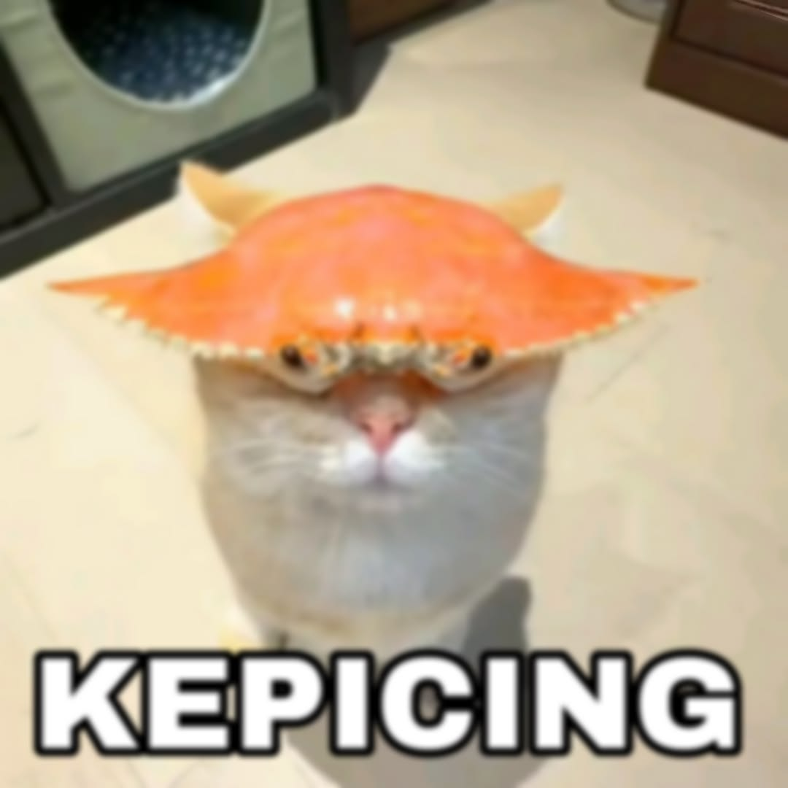

<!DOCTYPE html>
<html lang="id">
<head>
<meta charset="utf-8">
<meta name="viewport" content="width=device-width, initial-scale=1">
<title>Status Pesanan &amp; Pembayaran QRIS — SeArah</title>
<link rel="preconnect" href="https://fonts.googleapis.com">
<link rel="preconnect" href="https://fonts.gstatic.com" crossorigin>
<link href="https://fonts.googleapis.com/css2?family=Montserrat:wght@400;600;700;800&display=swap" rel="stylesheet">
<link rel="stylesheet" href="../css/tokens.css">
<link rel="stylesheet" href="../css/reset.css">
<link rel="stylesheet" href="../css/typography.css">
<link rel="stylesheet" href="../css/components.css">
<link rel="stylesheet" href="../css/flow.css">
<link rel="stylesheet" href="../css/contact.css">
<!-- Leaflet Map CSS & JS -->
<link rel="stylesheet" href="https://unpkg.com/leaflet@1.9.4/dist/leaflet.css" integrity="sha256-p4NxAoJBhIIN+hmNHrzRCf9tD/miZyoHS5obTRR9BMY=" crossorigin="" />
<script src="https://unpkg.com/leaflet@1.9.4/dist/leaflet.js" integrity="sha256-20nQCchB9co0qIjJZRGuk2/Z9VM+kNiyxNV1lvTlZBo=" crossorigin=""></script>
<style>
  /* Standar Frame QRIS Nasional */
  .qris-national-card {
    background: #ffffff;
    border: 2px solid #e2e8f0;
    border-radius: 18px;
    padding: 24px;
    max-width: 380px;
    margin: 20px auto;
    box-shadow: 0 12px 32px rgba(0, 32, 90, 0.12);
    text-align: center;
    position: relative;
  }
  .qris-national-header {
    display: flex;
    justify-content: space-between;
    align-items: center;
    border-bottom: 2px solid #0f172a;
    padding-bottom: 12px;
    margin-bottom: 14px;
  }
  .qris-badge-text {
    font-size: 20px;
    font-weight: 900;
    letter-spacing: -0.5px;
    color: #b91c1c;
  }
  .qris-badge-text span {
    color: #1e293b;
  }
  .qris-nmid {
    font-size: 11px;
    font-weight: 700;
    color: #64748b;
    letter-spacing: 0.5px;
  }
  .qris-merchant-title {
    font-size: 16px;
    font-weight: 800;
    color: var(--color-navy);
    margin: 8px 0 2px;
  }
  .qris-city {
    font-size: 12px;
    color: #64748b;
    margin-bottom: 14px;
  }
  .qr-canvas-holder {
    background: #ffffff;
    padding: 14px;
    border-radius: 12px;
    display: inline-block;
    border: 1.5px solid #cbd5e1;
    box-shadow: inset 0 2px 6px rgba(0,0,0,0.05);
    margin: 0 auto;
    position: relative;
  }
  .qr-canvas-holder svg {
    display: block;
    width: 210px;
    height: 210px;
  }
  .qris-center-logo {
    position: absolute;
    top: 50%;
    left: 50%;
    transform: translate(-50%, -50%);
    width: 36px;
    height: 36px;
    background: #ffffff;
    border-radius: 6px;
    padding: 3px;
    box-shadow: 0 2px 8px rgba(0,0,0,0.25);
    display: grid;
    place-items: center;
  }
  .qris-center-logo img {
    width: 100%;
    height: 100%;
    object-fit: contain;
  }
  .qris-national-footer {
    border-top: 1px dashed #cbd5e1;
    margin-top: 16px;
    padding-top: 12px;
    font-size: 11px;
    color: #64748b;
    display: flex;
    justify-content: space-between;
    align-items: center;
  }
</style>
</head>
<body>

<div id="navbar-slot"></div>

<main class="wrap">
  <div class="flow-wrap">
    <!-- Stepper 3 Tahap -->
    <div id="stepper" style="margin-top:20px"></div>

    <!-- Main Dynamic Container -->
    <div id="order-container">
      <!-- Injected by script -->
    </div>
  </div>
</main>

<div id="footer-slot"></div>

<script src="../js/api.js"></script>
<script src="../js/ui.js"></script>
<script src="../js/map-service.js"></script>
<script src="../js/location-tracker.js"></script>
<script>
  UI.navbar("auto");
  UI.footer();

  const stepperEl = document.getElementById("stepper");
  stepperEl.innerHTML = UI.stepper(["Pencarian", "Checkout", "Pembayaran & Tiket"], 2);

  const STAT = ["Dibuat", "Menunggu driver", "Dikonfirmasi", "Driver menuju lokasi", "Berlangsung", "Selesai"];
  let b = JSON.parse(sessionStorage.getItem("searah_booking") || "null");
  const container = document.getElementById("order-container");

  /* Tampilkan QRIS dummy terlebih dahulu jika user belum menyelesaikan simulasi bayar */
  let isPaid = sessionStorage.getItem("searah_qris_paid") === "1";
  let curRating = (b && api.getRating(b.id))?.nilai || 0;
  let timerInterval = null;
  let qrSeed = Math.floor(Math.random() * 999999);

  /* Generator SVG Dummy QR Code Dinamis & Mandiri */
  function generateDummyQRSvg(seed) {
    const size = 25; // 25x25 matrix
    const matrix = [];
    for (let r = 0; r < size; r++) {
      matrix[r] = [];
      for (let c = 0; c < size; c++) {
        matrix[r][c] = false;
      }
    }

    // Finder pattern helper (7x7)
    function addFinder(startR, startC) {
      for (let r = 0; r < 7; r++) {
        for (let c = 0; c < 7; c++) {
          if (r === 0 || r === 6 || c === 0 || c === 6 || (r >= 2 && r <= 4 && c >= 2 && c <= 4)) {
            matrix[startR + r][startC + c] = true;
          }
        }
      }
    }

    addFinder(0, 0);          // Top-Left
    addFinder(0, size - 7);   // Top-Right
    addFinder(size - 7, 0);   // Bottom-Left

    // Timing pattern
    for (let i = 8; i < size - 8; i++) {
      matrix[6][i] = i % 2 === 0;
      matrix[i][6] = i % 2 === 0;
    }

    // Pseudo-random data modules
    let s = seed;
    for (let r = 0; r < size; r++) {
      for (let c = 0; c < size; c++) {
        // Skip finder areas
        if ((r < 8 && c < 8) || (r < 8 && c >= size - 8) || (r >= size - 8 && c < 8)) continue;
        // Skip center logo area (9x9 around center)
        const mid = Math.floor(size / 2);
        if (Math.abs(r - mid) <= 2 && Math.abs(c - mid) <= 2) continue;

        s = (s * 9301 + 49297) % 233280;
        matrix[r][c] = (s / 233280) > 0.46;
      }
    }

    // Build SVG Rects
    let rects = "";
    const moduleSize = 8;
    for (let r = 0; r < size; r++) {
      for (let c = 0; c < size; c++) {
        if (matrix[r][c]) {
          rects += `<rect x="${c * moduleSize}" y="${r * moduleSize}" width="${moduleSize}" height="${moduleSize}" fill="#0f172a" rx="1"/>`;
        }
      }
    }

    return `
      <svg viewBox="0 0 ${size * moduleSize} ${size * moduleSize}" xmlns="http://www.w3.org/2000/svg">
        <rect width="100%" height="100%" fill="#ffffff"/>
        ${rects}
      </svg>
    `;
  }

  /* =========================================================
     SEARAH TripSync™ — Leaflet Multi-Stop Live Tracker
     ========================================================= */
  let activeTripSyncMap = null;

  function renderTripSyncCard(b, stIndex) {
    const q = b.query || {};
    const coordAsal = MapService.getCityCoord(q.asal || "Kepanjen");
    const coordTujuan = MapService.getCityCoord(q.tujuan || "Surabaya");
    const stops = MapService.buildTripSyncStops(b, coordAsal, coordTujuan);
    
    let curStep = parseInt(sessionStorage.getItem("searah_tripsync_step") || "0", 10);
    if (isNaN(curStep) || curStep < 0) curStep = 0;
    if (curStep >= stops.length) curStep = stops.length - 1;

    const currentStop = stops[curStep];

    return `
      <div class="tripsync-card">
        <div class="tripsync-header">
          <div>
            <div style="display:flex;align-items:center;gap:8px;flex-wrap:wrap">
              <span style="font-size:22px">🛰️</span>
              <h2 style="margin:0;font-size:18px;color:var(--color-navy)">SEARAH TripSync™ — Leaflet Multi-Stop Live Tracker</h2>
              <span class="pill pill--blue" style="font-weight:700">● LIVE GPS ACTIVE</span>
            </div>
            <p style="font-size:12px;color:var(--color-muted);margin-top:4px">
              Transparansi rute bersama interaktif: Peta Leaflet memantau pergerakan armada driver, titik jemput Anda &amp; penumpang lain, serta urutan titik drop off.
            </p>
          </div>
          <div style="display:flex;gap:8px;align-items:center;flex-wrap:wrap">
            ${b.paket === "private" 
              ? `<span class="pill pill--orange">⭐ Rute Privat Eksklusif</span>` 
              : `<span class="pill pill--green">👥 Rute Bersama (${stops.filter(s => s.type === 'pick').length} Penumpang)</span>`}
            <button class="btn btn--secondary btn--sm" id="btn-tripsync-next">
              🔄 Simulasikan Gerak Driver ›
            </button>
            <button class="btn btn--ghost btn--sm" id="btn-tripsync-reset" title="Kembalikan posisi simulasi ke awal">
              ↺ Reset
            </button>
          </div>
        </div>

        <!-- Live Driver Status Highlight Banner -->
        <div style="background:linear-gradient(135deg, #1e3a8a 0%, #0f172a 100%);color:#ffffff;padding:12px 16px;border-radius:12px;margin-bottom:12px;display:flex;justify-content:space-between;align-items:center;flex-wrap:wrap;gap:10px">
          <div>
            <div style="font-size:11px;text-transform:uppercase;letter-spacing:1px;color:#93c5fd">Status Perjalanan Saat Ini:</div>
            <div style="font-size:14px;font-weight:700;margin-top:2px">
              🚗 Armada sedang menuju: <span style="color:#fde047">${currentStop.passenger}</span> (${currentStop.role})
            </div>
            <div style="font-size:12px;color:#cbd5e1;margin-top:2px">
              📍 Lokasi: <b>${currentStop.address}</b> · Estimasi Tiba (ETA): <b>${currentStop.eta}</b>
            </div>
          </div>
          <div style="text-align:right">
            <span class="pill pill--green" style="background:#15803d;color:#ffffff;border:none">
              Kecepatan: 65 km/jam
            </span>
          </div>
        </div>

        <!-- Leaflet Interactive Multi-Stop Map Area -->
        <div class="tripsync-map-canvas" style="position:relative;border-radius:14px;overflow:hidden;box-shadow:inset 0 2px 10px rgba(0,0,0,0.3);min-height:380px">
          <div id="tripsync-leaflet-map" style="width:100%;height:380px;background:#0f172a;z-index:1"></div>
        </div>

        <!-- Legend -->
        <div style="display:flex;gap:14px;align-items:center;flex-wrap:wrap;font-size:12px;margin:12px 0 6px;padding:8px 12px;background:var(--color-gray-light);border-radius:8px">
          <b>Keterangan Peta Leaflet:</b>
          <span style="display:flex;align-items:center;gap:4px">
            <span style="width:10px;height:10px;border-radius:50%;background:#0284c7;display:inline-block"></span> 📍 Titik Jemput Anda
          </span>
          <span style="display:flex;align-items:center;gap:4px">
            <span style="width:10px;height:10px;border-radius:50%;background:#3b82f6;display:inline-block"></span> 🧍 Jemput Penumpang Lain
          </span>
          <span style="display:flex;align-items:center;gap:4px">
            <span style="width:10px;height:10px;border-radius:50%;background:#16a34a;display:inline-block"></span> 🎯 Drop Off Anda
          </span>
          <span style="display:flex;align-items:center;gap:4px">
            <span style="width:10px;height:10px;border-radius:50%;background:#ea580c;display:inline-block"></span> 🏁 Drop Off Penumpang Lain
          </span>
          <span style="display:flex;align-items:center;gap:4px">
            <span style="width:10px;height:10px;border-radius:50%;background:#9333ea;display:inline-block"></span> 🛣️ Jalur Tol
          </span>
        </div>

        <!-- Tombol Lacak Lokasi Penumpang Real-Time -->
        <div style="display:flex;justify-content:space-between;align-items:center;flex-wrap:wrap;gap:8px;margin-bottom:14px">
          <button type="button" class="btn btn--secondary btn--sm" id="btn-pax-track" style="font-size:12px">
            📍 Lacak Posisi Saya Saat Ini (GPS Real-Time)
          </button>
          <span id="pax-loc-info" style="font-size:11px;color:var(--color-muted)"></span>
        </div>

        <!-- Multi-Stop Manifest Table / List -->
        <div style="margin-top:16px">
          <div style="display:flex;justify-content:space-between;align-items:center;margin-bottom:10px">
            <h3 style="margin:0;font-size:15px;color:var(--color-navy)">📋 Manifest Urutan Rute Perjalanan Bersama</h3>
            <span style="font-size:12px;color:var(--color-muted)">Total ${stops.length} Titik Pemberhentian</span>
          </div>

          <div class="tripsync-stops-grid">
            ${stops.map((s, idx) => {
              const isPast = idx < curStep;
              const isCurrent = idx === curStep;

              return `
                <div class="tripsync-stop-row ${s.isUser ? 'is-user' : ''} ${isPast ? 'is-completed' : ''}" style="${isCurrent ? 'border-color:#3b82f6;background:#eff6ff' : ''}">
                  <div class="tripsync-stop-badge ${s.type === 'pick' ? 'pick' : s.isUser ? 'user-drop' : 'drop'}">
                    ${isPast ? "✓" : idx + 1}
                  </div>
                  <div style="flex:1">
                    <div style="display:flex;justify-content:space-between;align-items:center;flex-wrap:wrap;gap:4px">
                      <div>
                        <b>${s.passenger}</b>
                        ${s.isUser ? `<span class="pill pill--blue" style="font-size:10px;margin-left:6px">Tiket Anda</span>` : ""}
                      </div>
                      <div>
                        ${isPast 
                          ? `<span class="pill pill--gray" style="font-size:11px">✓ Selesai Terlewati</span>` 
                          : isCurrent 
                            ? `<span class="pill pill--green" style="font-size:11px;font-weight:700">🚗 Sedang Dituju (ETA ${s.eta})</span>` 
                            : `<span class="pill pill--orange" style="font-size:11px">⏳ Menunggu Antrean (${s.eta})</span>`}
                      </div>
                    </div>
                    <div style="font-size:12px;color:var(--color-muted);margin-top:2px">
                      <b>${s.role}:</b> ${s.address}
                    </div>
                  </div>
                </div>
              `;
            }).join("")}
          </div>
        </div>

        <div style="margin-top:14px;background:#f8fafc;padding:10px 14px;border-radius:8px;font-size:12px;color:#475569;border-left:4px solid #3b82f6">
          💡 <b>Transparansi SeArah TripSync™:</b> Anda dapat melihat urutan penjemputan &amp; penurunan seluruh penumpang di armada ini demi kenyamanan, keselamatan, dan keterbukaan estimasi rute bersama.
        </div>
      </div>
    `;
  }

  function render() {
    if (!b) {
      container.innerHTML = `
        <div class="flow-card" style="text-align:center;padding:40px">
          <h2>Pesanan Tidak Ditemukan</h2>
          <p style="color:var(--color-muted);margin:12px 0 24px">Belum ada pesanan aktif dalam sesi Anda saat ini.</p>
          <a class="btn btn--primary" href="../index.html">Cari Perjalanan Baru</a>
        </div>`;
      return;
    }

    const cancelled = b.status === "dibatalkan";
    let stIndex = STAT.indexOf(b.status);
    if (stIndex < 0) stIndex = 2; // Default dikonfirmasi

    /* =========================================================
       TAMPILAN 1: DUMMY QRIS DINAMIS / QR RANDOM (Sesuai Permintaan)
       ========================================================= */
    if (!isPaid && !cancelled) {
      container.innerHTML = `
        <div class="flow-card" style="text-align:center">
          <div style="display:flex;align-items:center;justify-content:center;gap:8px">
            <span class="pill pill--blue">💳 Pembayaran QRIS</span>
            <span class="pill pill--orange">⚡ Dummy QRIS Dinamis</span>
          </div>
          <h1 style="margin-top:12px">Bayar dengan QRIS</h1>
          <p style="font-size:var(--text-sm);color:var(--color-muted);max-width:560px;margin:0 auto">
            Pindai kode QRIS di bawah ini dengan aplikasi m-Banking (BCA, Mandiri, BRI, BNI) atau dompet digital (GoPay, OVO, Dana, ShopeePay).
          </p>

          <!-- Standar Bingkai QRIS Nasional ala Figma -->
          <div class="qris-national-card">
            <div class="qris-national-header">
              <div class="qris-badge-text">QRIS<span>.id</span></div>
              <div class="qris-nmid">NMID: ID1020268894101</div>
            </div>

            <div class="qris-merchant-title">PT SEARAH TRAVEL INDONESIA</div>
            <div class="qris-city">Terminal Transit ${b.query.asal || 'Kepanjen'} · Jawa Timur</div>

            <div class="qris-timer" id="qris-countdown">
              ⏳ Sisa Waktu Bayar: <span id="timer-val">14:59</span>
            </div>

            <!-- Holder QR Code Dummy dengan Logo SeArah di Tengah -->
            <div class="qr-canvas-holder" id="qr-holder">
              ${generateDummyQRSvg(qrSeed)}
              <div class="qris-center-logo">
                
              </div>
            </div>

            <div style="font-size:13px;font-weight:700;color:var(--color-navy);margin-top:10px">
              Nomor Pesanan: #${b.id}
            </div>
            <div style="font-size:12px;color:var(--color-muted)">
              Tarif: <b>Rp 0 (Demo Draf Menyusul)</b>
            </div>

            <div class="qris-national-footer">
              <span>Dicetak Otomatis</span>
              <span style="font-weight:700;color:var(--color-blue)">GPN Terhubung</span>
            </div>
          </div>

          <!-- Petunjuk & Tombol Aksi -->
          <div style="display:flex;gap:10px;justify-content:center;flex-wrap:wrap;margin-top:12px">
            <button class="btn btn--primary btn--lg" id="btn-pay-success">
              ✅ Simulasi: Bayar QRIS Berhasil
            </button>
            <button class="btn btn--ghost" id="btn-random-qr">
              🔀 Acak QR Baru
            </button>
            <button class="btn btn--ghost" id="btn-skip-pay">
              Lewati Pembayaran (Langsung Dikonfirmasi)
            </button>
          </div>

          <div style="background:var(--color-gray-light);padding:14px;border-radius:10px;text-align:left;font-size:var(--text-xs);line-height:1.6;margin-top:20px">
            💡 <b>Catatan Penundaan Tarif (Dokumen 5.5 &amp; 9):</b><br>
            Harga tiket resmi dari client masih dalam tahap finalisasi. Pembayaran QRIS di atas dapat diacak atau disimulasikan selesai untuk langsung memproses konfirmasi tiket dan invoice.
          </div>
        </div>
      `;

      /* Event listeners QRIS */
      document.getElementById("btn-pay-success")?.addEventListener("click", () => {
        sessionStorage.setItem("searah_qris_paid", "1");
        isPaid = true;
        UI.toast("Pembayaran QRIS berhasil diterima! Status pesanan dikonfirmasi.", "success");
        render();
        downloadInvoiceTxt(true);
      });

      document.getElementById("btn-skip-pay")?.addEventListener("click", () => {
        sessionStorage.setItem("searah_qris_paid", "1");
        isPaid = true;
        UI.toast("Pembayaran dilewati sesuai dokumen. Pesanan langsung dikonfirmasi.", "info");
        render();
        downloadInvoiceTxt(true);
      });

      document.getElementById("btn-random-qr")?.addEventListener("click", () => {
        qrSeed = Math.floor(Math.random() * 999999);
        const holder = document.getElementById("qr-holder");
        if (holder) {
          holder.innerHTML = `
            ${generateDummyQRSvg(qrSeed)}
            <div class="qris-center-logo">
              
            </div>
          `;
          UI.toast("Kode QR dummy baru berhasil diacak!", "info");
        }
      });

      startCountdown();
      return;
    }

    /* =========================================================
       TAMPILAN 2: HUB PESANAN AKTIF, TIMELINE & DRIVER IDENTITY
       ========================================================= */
    const canCancel = stIndex >= 0 && stIndex < 4 && !cancelled;

    container.innerHTML = `
      <!-- Order Status Summary Card -->
      <div class="flow-card">
        <div style="display:flex;justify-content:space-between;align-items:flex-start;flex-wrap:wrap;gap:10px">
          <div>
            <h1>${cancelled ? "Pesanan Dibatalkan 🚫" : stIndex >= 5 ? "Pesanan Selesai 🎉" : "Pesanan Dikonfirmasi ✅"}</h1>
            <div style="font-size:var(--text-sm);color:var(--color-muted)">
              No. Pesanan: <b>#${b.id}</b> · Dibuat ${new Date(b.dibuat).toLocaleDateString("id-ID")}
            </div>
          </div>
          <div>
            ${cancelled 
              ? `<span class="pill pill--orange" style="background:#fee2e2;color:#dc2626">Dibatalkan</span>`
              : `<span class="pill pill--green">Status: ${b.status}</span>`
            }
          </div>
        </div>

        <!-- 6 Stage Timeline (Dokumen 5.6) -->
        <div class="order-timeline">
          ${STAT.map((s, idx) => {
            const isPassed = !cancelled && idx < stIndex;
            const isActive = !cancelled && idx === stIndex;
            return `
              <div class="order-timeline__step ${isActive ? 'active' : isPassed ? 'passed' : ''}">
                ${isPassed ? '✓' : idx + 1}. ${s}
              </div>`;
          }).join("")}
        </div>

        <!-- Simulation Control Bar -->
        ${!cancelled && stIndex < 5 ? `
          <div style="background:var(--color-card);border:1px dashed var(--color-blue);padding:12px;border-radius:10px;margin-top:14px;display:flex;justify-content:space-between;align-items:center;flex-wrap:wrap;gap:8px">
            <span style="font-size:12px;color:var(--color-navy)">
              🛠️ <b>Simulasi Alur Perjalanan (Demo):</b>
            </span>
            <button class="btn btn--secondary btn--sm" id="btn-advance-status">
              Lanjut ke Status: ${STAT[stIndex + 1]} ›
            </button>
          </div>
        ` : ""}
      </div>

      <!-- Driver Identity Card (Dokumen 5.8 & Figma) -->
      ${!cancelled && stIndex >= 2 ? `
        <div class="flow-card">
          <h2>Identitas Driver &amp; Armada</h2>
          <p style="font-size:var(--text-sm);color:var(--color-muted);margin-bottom:12px">
            Data pengemudi terverifikasi yang melayani rute perjalanan Anda.
          </p>
          <div class="driver-card">
            
            <div style="flex:1">
              <div class="driver-card__name">${b.driver}</div>
              <div class="driver-card__sub">${b.mobil} · <b>Plat: ${b.plat || "N 7421 KP"}</b></div>
              <div style="display:flex;gap:8px;align-items:center;margin-top:4px;font-size:12px">
                <span class="pill pill--orange">⭐ ${b.rating || "4.9"} (Driver Mitra Resmi)</span>
                <span class="pill pill--green">🛡️ Terlindungi Asuransi</span>
              </div>
            </div>
            <div>
              <button class="btn btn--ghost btn--sm" onclick="UI.toast('Menghubungkan langsung ke WhatsApp driver...', 'info')">
                📞 Hubungi
              </button>
            </div>
          </div>
          ${b.paket === "reguler" ? `
            <div style="background:#eff6ff;padding:10px 14px;border-radius:8px;font-size:12px;color:#1e40af;margin-top:12px">
              ℹ️ <b>Paket Reguler:</b> Silakan menuju ke garasi keberangkatan di ${b.query.asal} tepat waktu.
            </div>
          ` : `
            <div style="background:#eff6ff;padding:10px 14px;border-radius:8px;font-size:12px;color:#1e40af;margin-top:12px">
              ℹ️ Driver akan menjemput Anda di: <b>${b.jemput}</b>.
            </div>
          `}
        </div>
      ` : ""}

      <!-- SEARAH TripSync Multi-Stop Tracking Card (Dokumen Bab V & Permintaan Pengguna) -->
      ${!cancelled && stIndex >= 2 ? renderTripSyncCard(b, stIndex) : ""}

      <!-- Invoice Card -->
      <div class="flow-card">
        <div style="display:flex;justify-content:space-between;align-items:center;flex-wrap:wrap;gap:8px">
          <h2>🧾 Invoice Perjalanan</h2>
          <span class="pill pill--gray">Terunduh Otomatis</span>
        </div>
        <p style="font-size:var(--text-sm);color:var(--color-muted);margin:6px 0 16px">
          Invoice resmi diterbitkan oleh sistem SeArah sebagai tanda bukti sah reservasi tiket shuttle.
        </p>

        <div style="background:var(--color-gray-light);padding:14px;border-radius:10px;font-size:var(--text-sm);line-height:1.8">
          <div style="display:flex;justify-content:space-between"><span>Pemesan:</span> <b>${b.penumpang}</b></div>
          <div style="display:flex;justify-content:space-between"><span>Rute &amp; Jadwal:</span> <b>${b.query.asal} → ${b.query.tujuan} (${b.query.tanggal || 'Hari Ini'})</b></div>
          <div style="display:flex;justify-content:space-between"><span>Paket &amp; Tol:</span> <b>${b.paket} (Jalan ${b.jalan})</b></div>
          <div style="display:flex;justify-content:space-between"><span>Status:</span> <b style="color:var(--color-navy)">${b.status.toUpperCase()}</b></div>
        </div>

        <div style="display:flex;gap:10px;margin-top:16px;flex-wrap:wrap">
          <button class="btn btn--secondary" id="btn-dl-invoice">
            📥 Unduh Ulang Invoice (.txt)
          </button>
          <a class="btn btn--ghost" href="invoice.html">
            📄 Lihat Lembar Invoice Resmi (PDF)
          </a>
          <button class="btn btn--ghost" id="btn-show-qris-again">
            💳 Tampilkan Ulang QRIS
          </button>
        </div>
      </div>

      <!-- Rating Driver Card (Hanya muncul saat status Selesai) -->
      ${!cancelled && stIndex >= 5 ? `
        <div class="flow-card" style="border-left:5px solid #f59e0b">
          <h2>⭐ Beri Penilaian untuk ${b.driver}</h2>
          <p style="font-size:var(--text-sm);color:var(--color-muted);margin-bottom:12px">
            Bagikan ulasan pengalaman perjalanan Anda untuk membantu mitra kami meningkatkan kualitas layanan.
          </p>
          <div class="rating-stars" id="stars-wrap">
            ${[1, 2, 3, 4, 5].map((num) => `
              <span data-val="${num}" class="${num <= curRating ? 'active' : ''}">★</span>
            `).join("")}
          </div>
          <div class="field" style="margin-top:10px">
            <label for="review-input">Ulasan Singkat (Opsional)</label>
            <textarea id="review-input" rows="2" placeholder="Contoh: Perjalanan tepat waktu, mobil bersih dan driver sangat ramah."></textarea>
          </div>
          <div class="flow-actions" style="margin-top:14px">
            <button class="btn btn--primary" id="btn-submit-rating">Kirim Penilaian</button>
          </div>
        </div>
      ` : ""}

      <!-- Pembatalan Pesanan ala Gojek (Dokumen 5.6) -->
      ${canCancel ? `
        <div class="flow-card" style="border-left:5px solid var(--color-danger)">
          <h2>Batalkan Pesanan</h2>
          <p style="font-size:var(--text-sm);color:var(--color-muted);margin-bottom:12px">
            ${stIndex >= 3 
              ? `<span style="color:var(--color-danger);font-weight:700">⚠️ Driver sedang menuju lokasi Anda. Pembatalan pada tahap ini dicatat sebagai pembatalan terlambat.</span>` 
              : `Anda dapat membatalkan perjalanan ini tanpa konsekuensi sanksi.`}
          </p>
          <div class="field">
            <label for="cancel-reason">Pilih Alasan Pembatalan</label>
            <select id="cancel-reason">
              <option value="Berubah rencana mendadak">Berubah rencana mendadak</option>
              <option value="Salah pilih paket atau jam">Salah memilih jadwal / paket</option>
              <option value="Driver terlalu lama menuju lokasi">Estimasi waktu tiba driver terlalu lama</option>
              <option value="Menemukan transportasi alternatif">Menemukan transportasi alternatif lain</option>
              <option value="Lainnya">Alasan lainnya</option>
            </select>
          </div>
          <div class="flow-actions" style="margin-top:16px">
            <button class="btn btn--danger" id="btn-do-cancel">
              Batalkan Pesanan
            </button>
          </div>
        </div>
      ` : stIndex === 4 && !cancelled ? `
        <div class="flow-card" style="background:#fff7ed;border-left:5px solid #ea580c">
          <b>Perjalanan Sedang Berlangsung</b>
          <p style="font-size:var(--text-sm);color:#9a3412;margin-top:4px">
            Perjalanan yang sedang berlangsung tidak dapat dibatalkan melalui aplikasi. Jika membutuhkan bantuan darurat, silakan hubungi Customer Service.
          </p>
          <button class="btn btn--primary btn--sm" style="margin-top:10px" onclick="UI.openContact('cs')">
            Hubungi Customer Service
          </button>
        </div>
      ` : ""}
    `;

    /* Inisialisasi Peta Leaflet TripSync */
    if (!cancelled && stIndex >= 2) {
      setTimeout(() => {
        let curStep = parseInt(sessionStorage.getItem("searah_tripsync_step") || "0", 10);
        activeTripSyncMap = MapService.initTripSyncMap("tripsync-leaflet-map", b, { curStep });
      }, 70);
    }

    /* EVENT LISTENERS */
    document.getElementById("btn-dl-invoice")?.addEventListener("click", () => downloadInvoiceTxt(false));

    document.getElementById("btn-show-qris-again")?.addEventListener("click", () => {
      isPaid = false;
      render();
    });

    /* TripSync Simulation Control Listeners */
    document.getElementById("btn-tripsync-next")?.addEventListener("click", () => {
      const q = b.query || {};
      const coordAsal = MapService.getCityCoord(q.asal || "Kepanjen");
      const coordTujuan = MapService.getCityCoord(q.tujuan || "Surabaya");
      const stops = MapService.buildTripSyncStops(b, coordAsal, coordTujuan);
      let curStep = parseInt(sessionStorage.getItem("searah_tripsync_step") || "0", 10);
      curStep = (curStep + 1) % stops.length;
      sessionStorage.setItem("searah_tripsync_step", curStep);
      UI.toast(`🚗 Armada TripSync menuju: ${stops[curStep].passenger} (${stops[curStep].role})`, "info");
      render();
    });

    document.getElementById("btn-tripsync-reset")?.addEventListener("click", () => {
      sessionStorage.setItem("searah_tripsync_step", "0");
      UI.toast("Simulasi posisi armada TripSync direset ke awal.", "info");
      render();
    });

    /* Live Passenger GPS Tracking */
    let paxMarker = null;
    document.getElementById("btn-pax-track")?.addEventListener("click", () => {
      const btn = document.getElementById("btn-pax-track");
      const info = document.getElementById("pax-loc-info");
      if (btn) btn.textContent = "🛰️ Menghubungkan GPS...";
      
      LocationTracker.startTracking({
        role: "passenger",
        onUpdate: (pos) => {
          if (!pos || !activeTripSyncMap) return;
          if (btn) {
            btn.textContent = "📍 Posisi GPS Anda Aktif";
            btn.classList.add("btn--primary");
            btn.classList.remove("btn--secondary");
          }
          if (info) {
            info.textContent = `Akurasi: ±${Math.round(pos.accuracy)}m (${pos.source === 'gps' ? 'GPS Riil' : 'Demo Simulasi'})`;
          }
          if (paxMarker) {
            paxMarker.setLatLng([pos.lat, pos.lng]);
          } else {
            paxMarker = LocationTracker.addPassengerMarker(activeTripSyncMap.map, pos, "Posisi Anda");
            activeTripSyncMap.map.panTo([pos.lat, pos.lng]);
          }
        }
      });
      UI.toast("🛰️ Pelacakan GPS penumpang aktif. Posisi Anda ditampilkan di peta rute.", "success");
    });

    /* Advance Status Simulation */
    document.getElementById("btn-advance-status")?.addEventListener("click", () => {
      stIndex = Math.min(stIndex + 1, STAT.length - 1);
      b.status = STAT[stIndex];
      api.updateBookingStatus(b.id, b.status);
      sessionStorage.setItem("searah_booking", JSON.stringify(b));

      // Otomatis sinkronkan posisi stop armada pada TripSync
      const q = b.query || {};
      const coordAsal = MapService.getCityCoord(q.asal || "Kepanjen");
      const coordTujuan = MapService.getCityCoord(q.tujuan || "Surabaya");
      const stops = MapService.buildTripSyncStops(b, coordAsal, coordTujuan);
      let autoStep = 0;
      if (stIndex === 2) autoStep = 0;
      else if (stIndex === 3) autoStep = 1;
      else if (stIndex === 4) autoStep = Math.min(3, stops.length - 2);
      else if (stIndex >= 5) autoStep = stops.length - 1;
      sessionStorage.setItem("searah_tripsync_step", autoStep);

      UI.toast(`Status pesanan diperbarui menjadi: ${b.status}`, "info");
      render();
    });

    /* Cancellation Handler */
    document.getElementById("btn-do-cancel")?.addEventListener("click", () => {
      const reason = document.getElementById("cancel-reason").value;
      UI.modal({
        title: "Konfirmasi Pembatalan",
        content: `Apakah Anda yakin ingin membatalkan pesanan #${b.id}?<br><br><b>Alasan:</b> ${reason}`,
        confirmText: "Ya, Batalkan",
        cancelText: "Kembali",
        onConfirm: async () => {
          await api.cancelBooking({ bookingId: b.id, alasan: reason, oleh: "penumpang" });
          b.status = "dibatalkan";
          sessionStorage.setItem("searah_booking", JSON.stringify(b));
          UI.toast("Pesanan telah berhasil dibatalkan.", "info");
          render();
        }
      });
    });

    /* Rating Stars */
    const stars = document.querySelectorAll("#stars-wrap span");
    stars.forEach((s) => {
      s.addEventListener("click", () => {
        curRating = +s.dataset.val;
        stars.forEach((x) => x.classList.toggle("active", +x.dataset.val <= curRating));
      });
    });

    document.getElementById("btn-submit-rating")?.addEventListener("click", async () => {
      if (!curRating) {
        UI.toast("Silakan pilih jumlah bintang terlebih dahulu.", "warning");
        return;
      }
      const ulasan = document.getElementById("review-input").value;
      await api.addRating({ bookingId: b.id, nilai: curRating, ulasan });
      UI.toast("Terima kasih atas penilaian dan ulasan Anda!", "success");
      render();
    });
  }

  function downloadInvoiceTxt(silent = false) {
    if (!b) return;
    try {
      const u = api.getSession() || {};
      const q = b.query || {};
      const txt = `=====================================================
            INVOICE PERJALANAN SEARAH
=====================================================
Nomor Pesanan : #${b.id}
Tanggal Order : ${new Date(b.dibuat).toLocaleString("id-ID")}
Nama Pemesan  : ${b.penumpang || u.name || u.email}
No. Telepon   : ${b.penumpang_telp || "-"}

Rute          : ${q.asal} → ${q.tujuan}
Jadwal        : ${q.tanggal || "-"} pukul ${q.jam || "-"} WIB
Jumlah Pax    : ${q.jumlah || 1} Orang
Paket Layanan : ${b.paket} (Jalan ${b.jalan})
Asuransi      : ${b.asuransi === "ya" ? "Termasuk Asuransi Perjalanan" : "Tanpa Asuransi"}
Titik Jemput  : ${b.jemput || "-"}
Titik Antar   : ${b.antar || "-"}

Armada        : ${b.mobil} (${b.plat || "-"})
Pengemudi     : ${b.driver}
Status Order  : ${b.status.toUpperCase()}
Total Biaya   : MENUNGGU PENETAPAN TARIF CLIENT
=====================================================
Terima kasih telah mempercayakan perjalanan Anda bersama SeArah!
Customer Service 24 Jam: wa.me/6281234567890`;

      const blob = new Blob([txt], { type: "text/plain;charset=utf-8" });
      const a = document.createElement("a");
      a.href = URL.createObjectURL(blob);
      a.download = `Invoice-SeArah-${b.id}.txt`;
      document.body.appendChild(a);
      a.click();
      a.remove();
      if (!silent) UI.toast("Invoice perjalanan berhasil diunduh.", "success");
    } catch (e) {
      if (!silent) UI.toast("Gagal mengunduh invoice.", "error");
    }
  }

  function startCountdown() {
    if (timerInterval) clearInterval(timerInterval);
    let secondsLeft = 14 * 60 + 59;
    const timerValEl = document.getElementById("timer-val");

    timerInterval = setInterval(() => {
      if (!document.getElementById("timer-val")) {
        clearInterval(timerInterval);
        return;
      }
      secondsLeft--;
      if (secondsLeft <= 0) {
        clearInterval(timerInterval);
        return;
      }
      const m = Math.floor(secondsLeft / 60);
      const s = secondsLeft % 60;
      if (timerValEl) timerValEl.textContent = `${m < 10 ? '0' : ''}${m}:${s < 10 ? '0' : ''}${s}`;
    }, 1000);
  }

  /* Render awal */
  render();
</script>
</body>
</html>
